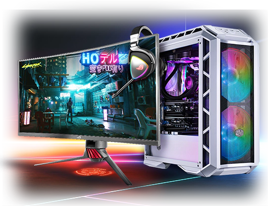

Компьютер (англ. computer, — «вычислитель», от лат. computare) — считать, вычислять) — функциональное устройство, способное выполнять значительный объём вычислений,
включая многочисленные арифметические и логические операции, без вмешательства человека. Компьютер может быть как отдельным блоком,
так и состоить из нескольких взаимосвязанных устройств. Является синонимом терминов «электронная вычислительная машина», «вычислительная система».